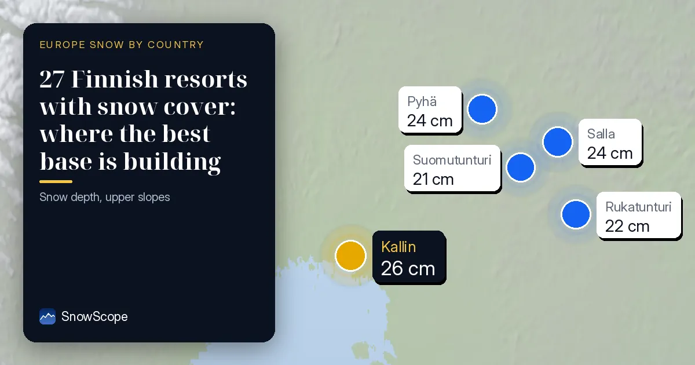
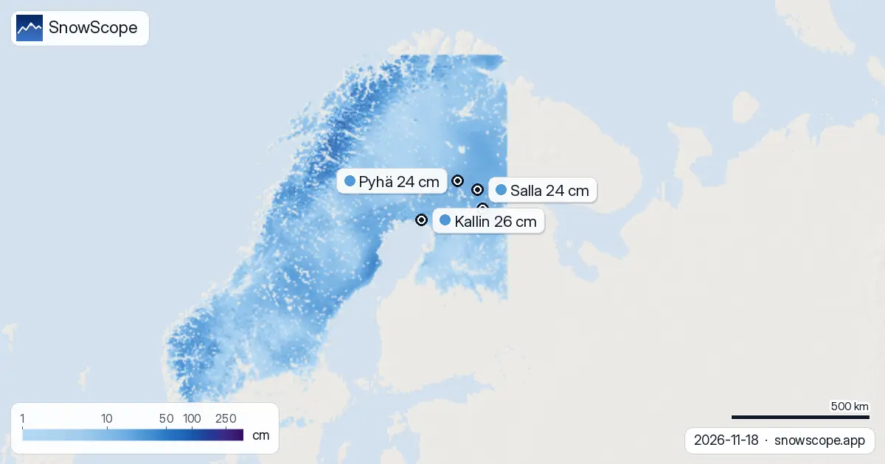

27 Finnish resorts with snow cover: where the best base is building
Of Finland's 67 resorts, 27 have measurable snow on their upper slopes today. The highest elevations are holding the best base: above 1000 m, we see 41 cm on average, while lower terrain remains patchy at 5 cm.
See the live snow forecast for Kallin in the SnowScope appSnow depth, powder alerts and the 3D map, free.
Upper slopes lead the season
The elevation tells the story. Finland's mountain zones split cleanly by height. Between 1000 and 1500 m, snow cover is complete at 100% and the mean depth reaches 41 cm. That is the band where resorts can reliably operate. Drop to 500–1000 m and the picture softens: still 100% cover but only 15 cm average. Below 500 m, snow becomes scarce; just 55% of the land is white and depth averages only 5 cm. This is why 27 resorts have snow but 40 do not.
The snow line sits at 200 m, so low-elevation areas in central and southern Finland remain brown. Kallin leads all resorts with 26 cm, but Kallin sits at only 65 m; it is riding an unusually early season. The higher fells—Rukatunturi at 494 m, Salla at 462 m, Pyhä at 375 m—hold 22–24 cm and benefit from their altitude.
| Resort | Snow depth | New snow, 72 h | Coming, next days | Top |
|---|---|---|---|---|
| Kallin | 26 cm | 5 cm | 2 cm | 65 m |
| Salla | 24 cm | 10 cm | 3 cm | 462 m |
| Pyhä | 24 cm | 9 cm | 5 cm | 375 m |
| Rukatunturi | 22 cm | 11 cm | 4 cm | 494 m |
| Suomutunturi | 21 cm | 11 cm | 4 cm | 400 m |

Where to find the deepest snow now
Two areas stand out in the last three days. The Kainuu hills received 34 cm in 72 hours, far ahead of anywhere else in the country. The Ruka fells got 16 cm in the same period. These hotspots explain why Rukatunturi and Suomutunturi both recorded 11 cm of new snow, while Kallin saw only 5 cm despite leading in total depth.
Salla and Pyhä each added 9–10 cm over three days, putting them close behind. The data is from 18 November. The pattern shows that the northern and northeastern uplands are the snow engine of Finland right now.

Snow coverage is climbing fast
Finland was 55% snow-covered on 18 November—that is 165,910 km² of the modelled area of 300,730 km². A week ago, only 65,300 km² had snow, so coverage has surged by 100,610 km² in seven days. The trend is steep and clear: early November was bare; mid-November is turning white.
Yesterday, snow-covered area dropped by 12,090 km² as warmer air melted margins. This is normal in a young season. The bigger picture matters: a week ago, only 27% of the country was white. Today it is 55%. The transition has been fast.
What the next week will bring
Our model forecasts a maximum of 9 cm in the next three days and 13 cm over the next seven days. The heaviest snowfall day is forecast for 21 November, with 5 cm expected. That means another week of steady accumulation.
Every resort we track will add depth. Kallin may gain 2 cm in three days; Pyhä could pick up 5 cm; Rukatunturi and Suomutunturi another 4 cm each. By late November, the base will begin to feel settled. Forecasts can shift, but the direction is snow.
How this season compares to normal
Kallin is running 375% of its usual mid-November depth. That is 26 cm against a typical 4 cm at this date. Even allowing for the fact that Kallin sits low and catches early snow, this is well above average. Salla is at 133% of normal (24 cm vs 18 cm usual), and Rukatunturi at 125% (22 cm vs 16 cm usual). Five of Finland's main resorts are tracking above their seasonal normal.
The comparison note: past winters in this period have been thinner. Snow has arrived early and built quickly. High-altitude zones are now at their typical late-November depth, which is remarkable for November 18.
Upper terrain worth the drive
If you are chasing the best base today, head to the northern fells. Rukatunturi, Suomutunturi, and Salla all offer 22–24 cm at 400–462 m elevation, with 100% snow cover above 500 m. Pyhä sits slightly lower but has also seen strong recent accumulation and holds 24 cm. Kallin is leading in absolute depth but its single small peak means limited vertical and terrain.
The lower resorts and central Finland remain marginal for now. Snow at sea level and low elevations is thin and patchy. The forecast adds 13 cm by late next week, so the band of skiable terrain will expand downward. Early season in Finland rewards patience and elevation.
Tips for skiers
- Head to resorts above 400 m—Rukatunturi, Suomutunturi, Salla, Pyhä—where snow cover is complete and depth stable at 22–24 cm.
- The Kainuu and Ruka fells received 34 cm and 16 cm respectively in the last 72 hours; these areas offer the fastest snow accumulation.
- Expect another 13 cm over the next seven days with the heaviest fall on 21 November; conditions will improve through late November.
- Avoid low-elevation areas below 500 m where cover remains patchy and depth below 5 cm; rocks and thin coverage are risks.
- Check the official avalanche bulletin if venturing off-piste in the northern uplands, where steep terrain and recent heavy snow require attention.
About these numbers
Resort snow depths are the deepest snow on the resort's upper slopes from the SnowScope snow model (about 1 km, run of 18 November); they are estimates for an area, not a measurement at one point. Station values are measurements on the date shown. Forecasts can change. Always read the official avalanche bulletin before going off-piste.
Cite this report
For research, teaching or the press: the numbers and charts are free to reuse under CC BY 4.0 with this citation.
SnowScope (2026), 27 Finnish resorts with snow cover: where the best base is building, https://snowscope.app/blog/en/2026/11/finland-resorts-with-snow-18-november-2026.html, accessed 2026-11-18
SnowScope (Atlas Labs). (2026, November 18). 27 Finnish resorts with snow cover: where the best base is building. SnowScope snow reports. https://snowscope.app/blog/en/2026/11/finland-resorts-with-snow-18-november-2026.html
BibTeX
@misc{snowscope2026finlandresortswithsnow18,
author = {{SnowScope (Atlas Labs)}},
title = {27 Finnish resorts with snow cover: where the best base is building},
year = {2026},
month = nov,
howpublished = {\url{https://snowscope.app/blog/en/2026/11/finland-resorts-with-snow-18-november-2026.html}},
note = {Published 2026-11-18 13:06 UTC; accessed 2026-11-18}
}· CC BY 4.0 · Methods, data and tools →
Kallin: snow and temperature by height, this winter vs last (tools) →
Follow Kallin
Free: a message when fresh snow is coming, and the forecast every morning.
More snow reports

Tornik on Zlatibor had up to 39 cm on its upper slopes on 15 November 2026; by Wednesday it had melted. Kopaonik barely turned white. The week day by day and what comes next.

Savin Kuk above Žabljak picked up 22 cm of snow from 13 to 19 November and still has 6 cm today. Kolašin 1450 and 1600 are bare. The week day by day, and the next chances.

Up to 30 cm of snow fell on northern Velebit and Bjelolasica on Friday 13 November 2026. By Tuesday it was gone. Day by day, what the mountains kept, and when snow comes back.